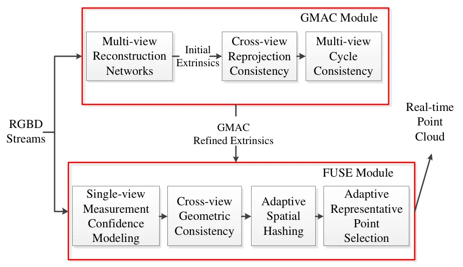
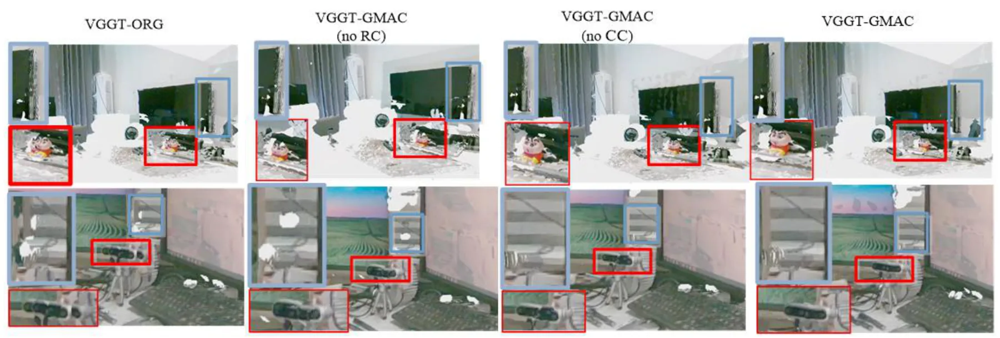
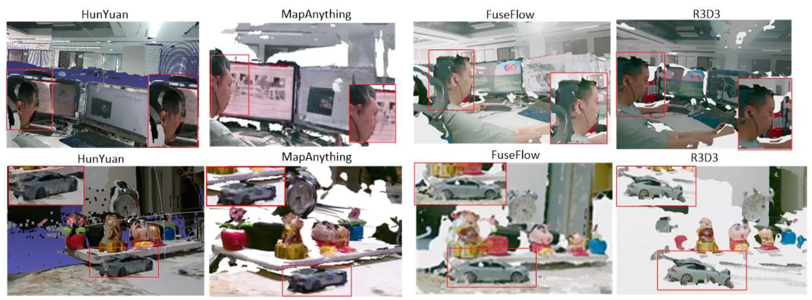
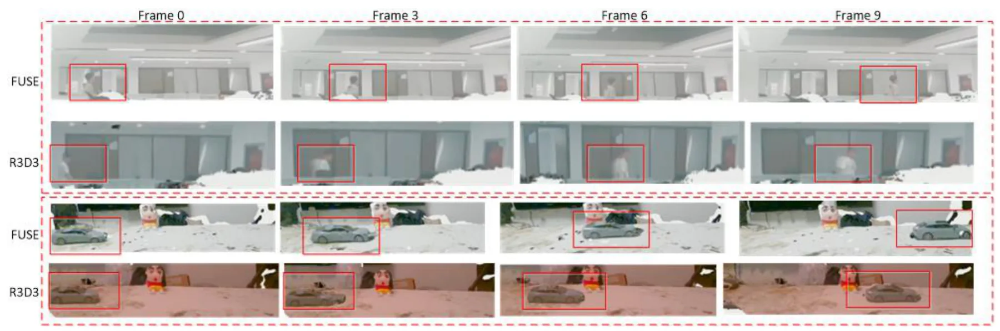
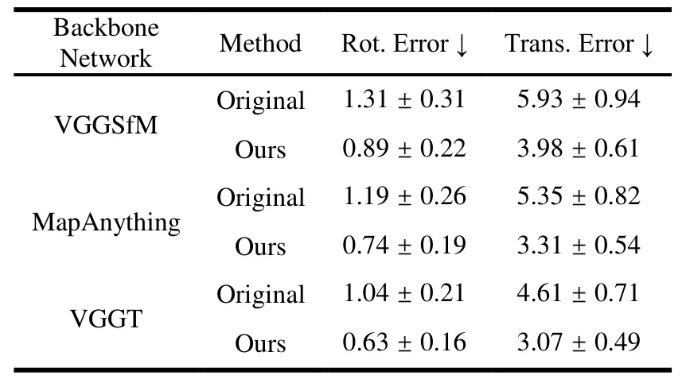

FUSE-Flow：解耦标定与无状态实时多视角点云融合框架FUSE-Flow: A Decoupled Framework for Calibration and Stateless Real-Time Multi-View Point Cloud Fusion
对多相机 SLAM/重建、实时点云融合和在线外参维护有工程参考价值。
一句话工作总结
通过解耦外参细化和置信度引导融合，实现可扩展的实时多视角点云重建。
摘要
FUSE-Flow 面向实时多相机三维重建，将外参标定和点云融合解耦为 GMAC 与 FUSE 两个模块。GMAC 通过几何约束和多视角重建 transformer 细化相机外参，FUSE 使用置信度加权和 adaptive spatial hashing 完成无状态线性复杂度融合；二者互相促进，提高稀疏视角标定、动态稳定性和系统可扩展性。
Real-time multi-camera 3D reconstruction is a key foundation for immersive media, remote interaction and spatial computing. While synchronized camera arrays are widely adopted, achieving geometrically consistent and scalable real-time reconstruction remains challenging. A key challenge is the close linkage among extrinsic calibration, multi-view fusion and global optimization, which causes fluctuating reconstruction results, cumulative errors and poor system expandability. We propose a decoupled framework for calibration and stateless real-time multi-view point cloud fusion (FUSE-Flow), a framework with two collaborative components: geometry-aligned multi-view extrinsic calibration (GMAC) and reliability-guided multi-view point cloud fusion (FUSE). This split design avoids conflicting optimization objectives for targeted improvement. The GMAC module refines camera extrinsics via geometric constraints and multi-view reconstruction transformers, enabling accurate sparse-view calibration without calibration targets, dense images or global bundle adjustment. The FUSE module integrates confidence weighting and adaptive spatial hashing for stateless fusion, ensuring linear time and memory consumption. The two modules mutually reinforce each other: accurate camera poses boost fusion accuracy, and confidence-aware fusion corrects calibration biases. Validated on public datasets and real camera setups, FUSE-Flow outperforms mainstream real-time reconstruction methods in visual effect, dynamic stability and scalability, providing a practical solution for large-scale real-time 3D reconstruction.
中文解读摘录
图表/页面预览
{kind=link}

{kind=link}

{kind=link}

{kind=link}

{kind=link}
